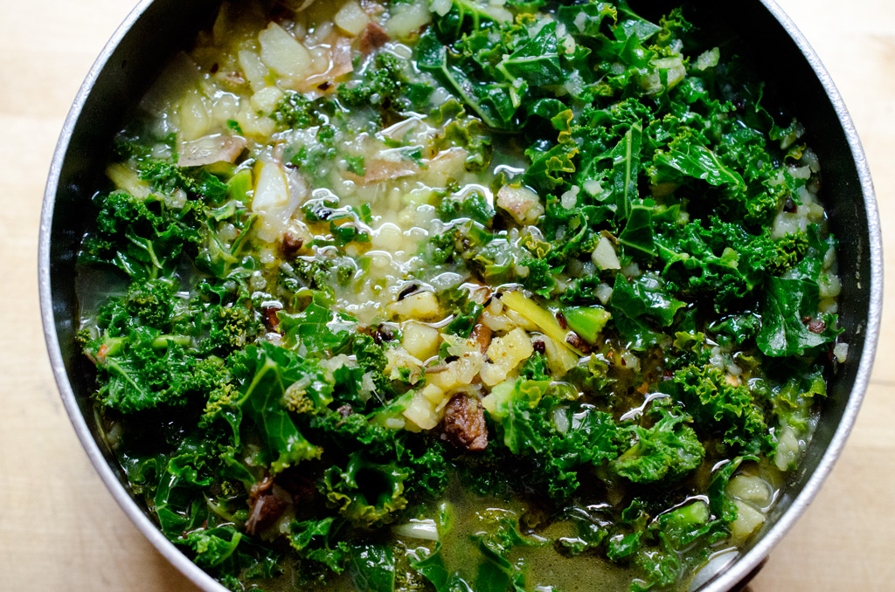

Caldo Verde

Description
A hearty brazilian potato and sausage soup with collard greens or kale.
Ingredients
- Extra virgin olive oil - 60 mL
- Linguiça - 300 g, sliced into 6mm coins
- Spanish onion - 1 large, diced
- Kosher salt
- Garlic cloves - 2-4, sliced
- Medium potatoes - 6, roughly chopped
- Chicken broth - 1 L
- Water - 1 L
- Collard greens or kale - 450 g, julienned
Equipment
- Large stock pot or dutch oven
Instructions
-
In a large pot over medium heat, wam the olive oil. Add the
linguiça and coot until lightly browned on both sides.
-
Rmove the sausage slices with a slotted spoon and transfer them
to a plate, making sure they drain well into the pot; the fat
will flavor the soup.
-
Dump the spanish onion into the pot. Sprinkle with kosher salt
and cook, stirring occasionally, until softened and translucent.
Add the garlic and cook 2 minutes more.
-
Add the potatoes, water, and broth. Bring to a boil. Reduce the
heat to a simmer. Cook until the potatoes are almost tender.
Remove from the heat and let soup cool slightly.
-
Puree the soup, optionally adding half the linguiça prior to
blending.
-
Add the collard greens and bring the soup back to a boil. Reduce
heat and simmer until tender. Season with salt, and freshly
ground pepper.
-
Ladle the soup into bowls and garnish with the remaining slices
of linguiça.
Notes
-
Storage: Store leftover caldo verde in a sealed
container in the fridge for up to 4 days.
-
Freezing: To freeze the soup, let it cool
fully, then portion it into containers or resealable bags and
store it in the freezer for up to 3 months. Thaw in the fridge
before reheating.
-
Reheating and thinning: Reheat in a saucepan
over medium-low heat until warmed through. If the soup is too
thick after reheating, thin with additional broth or water.
Home